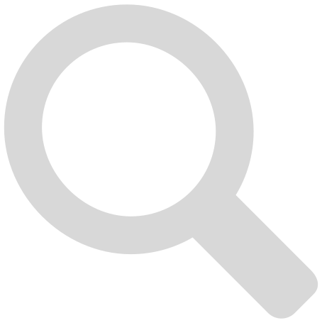

Ett enkelt ord i sökrutan resulterar i en Google-sökning med ordet.
Om söksträngen är ett av de förinställda genvägarna öppnas samtliga webbsidor som är kopplade till det. 'news' öppnar 'aftonbladet.se' och 'dn.se' i olika flikar. Du kan redigera och lägga till nya genvägar i inställningarna.
Om en sökmening börjar med ett sökord, t.ex. 'images' eller 'maps', så söks resten av meningen på en specifierad sida. Sökmeningen 'images cats' söker ordet 'cats' på Google Images. En lista på sökord hittar du i inställningarna där du också kan lägga till egna.
Har du ett nyckelord som första ord så kan du använda systemfunktioner. 'rem' (förkortning av remember) sparar resten av meningen i ett minne. 'recall' återkallar det du tidigare har sparat. 'clear memory' raderar det du sparat.
All kod och design är gjord av Isak Sandin. Ikonerna är 'Entypo Pictograms' av Daniel Bruce (www.entypo.com)
